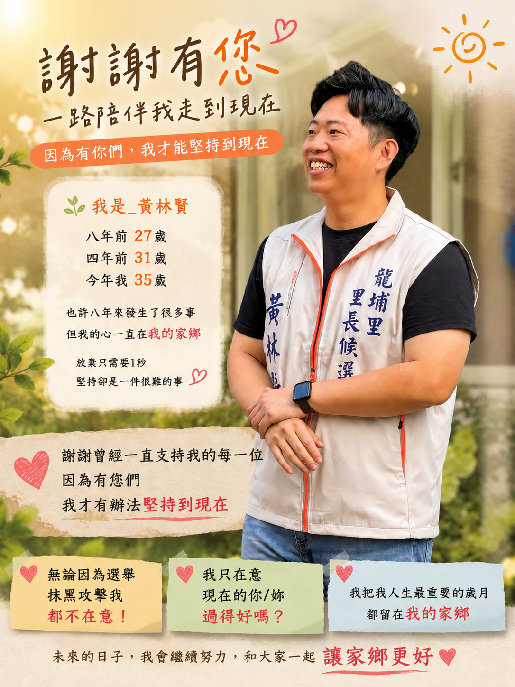
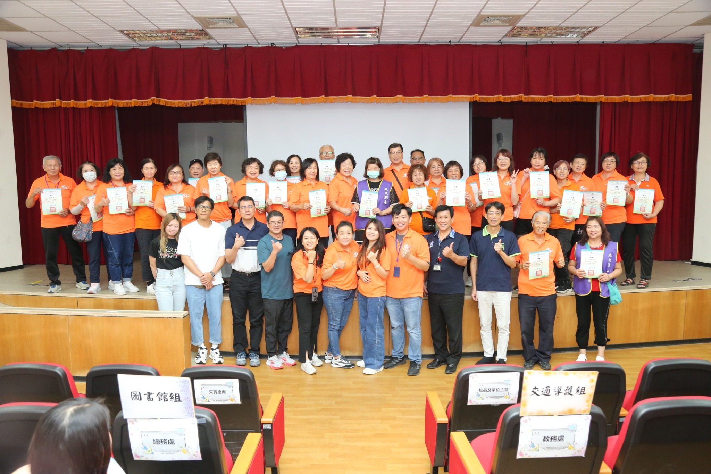
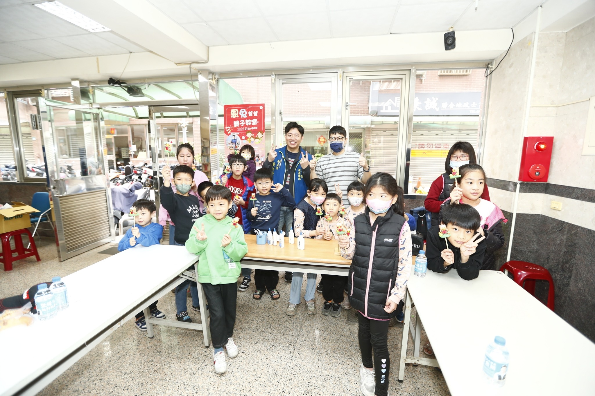
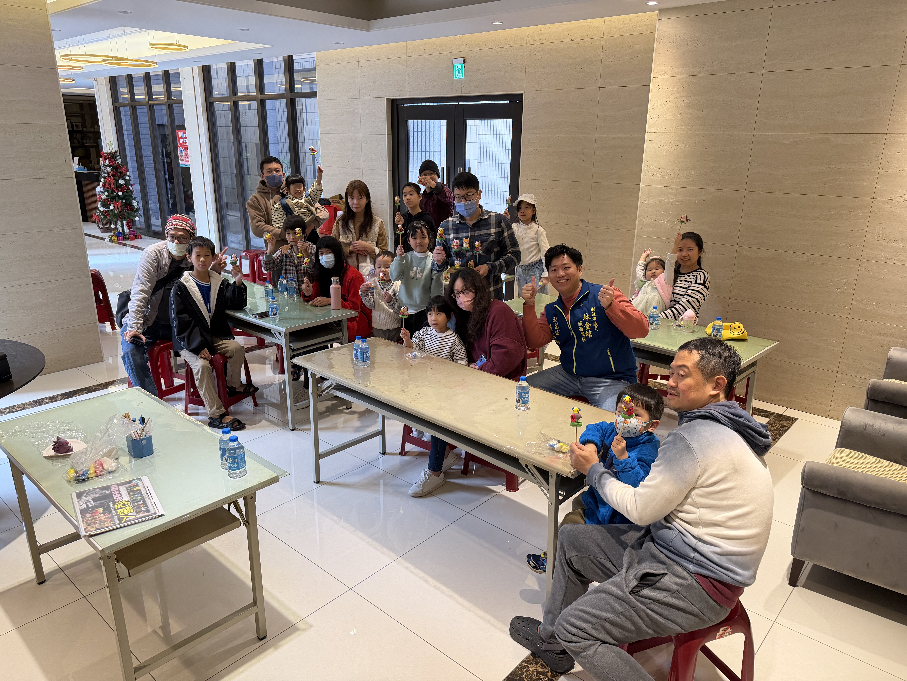
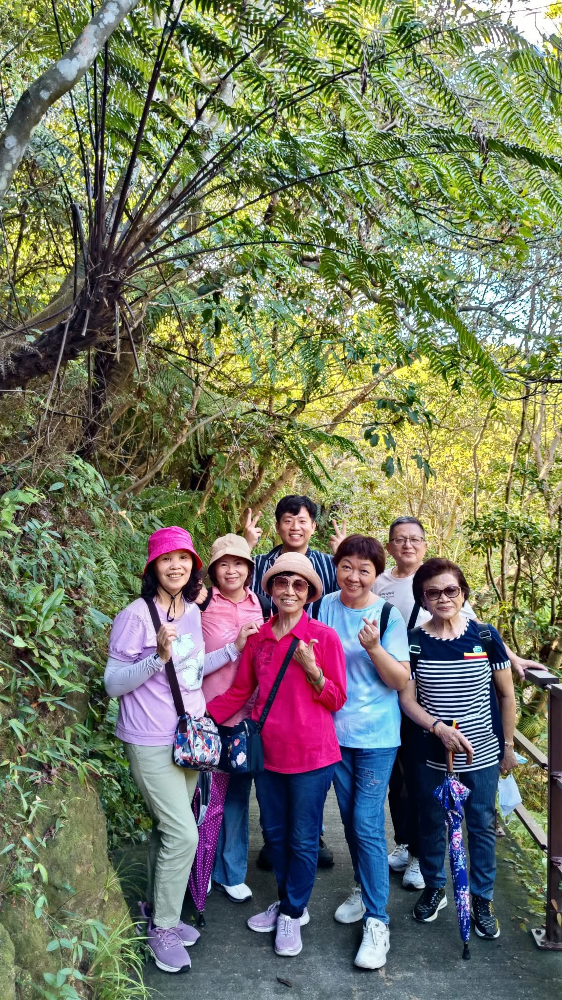
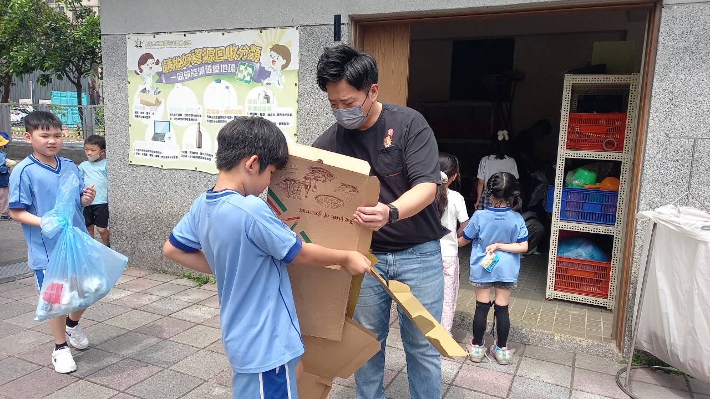

阿賢的故事

「真正的地方服務，
不是選舉到了才出現。」
不是選舉到了才出現。」
我是黃林賢，土生土長的龍埔囡仔。
從27歲開始投入地方服務， 至今已經走過多年基層歷練。
我始終相信， 地方需要的是願意傾聽、 願意行動、 願意真正站在第一線的人。
無論是交通安全、 環境改善、 青年參與、 長者照顧， 還是弱勢關懷， 我都希望用實際行動， 一步一步讓龍埔變得更好。
龍埔向前，賢在實現。

我是黃林賢，土生土長的龍埔囡仔。
從27歲開始投入地方服務， 至今已經走過多年基層歷練。
我始終相信， 地方需要的是願意傾聽、 願意行動、 願意真正站在第一線的人。
無論是交通安全、 環境改善、 青年參與、 長者照顧， 還是弱勢關懷， 我都希望用實際行動， 一步一步讓龍埔變得更好。
龍埔向前，賢在實現。
改善危險路口、強化學區安全， 守護孩子與行人安心通行。
提升公共環境、增加綠化美化， 打造更乾淨舒適的龍埔。
鼓勵青年投入地方， 建立更多世代交流與公共參與機會。
關心長輩需求， 推動友善高齡環境， 讓長者生活更安心。
串聯公益與社會資源， 協助弱勢家庭， 不讓任何人被遺忘。
只要行程允許， 阿賢會持續在龍埔各路口與大家問候， 傾聽地方聲音。
持續關心學區、 社區周邊交通安全， 爭取更友善的通學與行人環境。
透過親子活動、 社區互動與志工參與， 讓龍埔更有溫度。





有地方問題、活動建議、志工參與， 歡迎透過 FB 或 LINE 與阿賢聯繫。